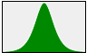
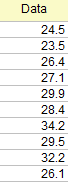
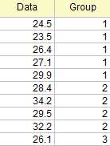
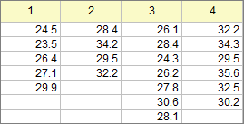

/Normal_PDF.png)

詳細な情報
分布の識別ツールを使用すると、次のことができます。
Originのこのツールでは14種類の分布と3種類の変換関数が使用可能です。
| 正規分布 | ロジスティック分布 |
|---|---|
|
 |
| 対数正規分布
3パラメータ対数正規分布 |
ログロジスティック分布 | ワイブル分布
3パラメータワイブル分布 |
ガンマ分布 | レイリー分布 |
|---|---|---|---|---|
/Lognormal_PDF.png) |
| 最小極値分布 | 最大極値分布 | 指数分布 | 混合ガウス分布 | 折りたたみ正規分布 |
|---|---|---|---|---|
/Exp_PDF.png) |
| Box-Cox変換 | Yeo-Johnson変換 | Johnson変換 |
|---|
アイコンを選択してダイアログを開きます。
データの配置に応じて、ダイアログの入力タブでオプションを選択します。
| データ配置 | 指定するオプション |
|---|---|
| 1つのデータセット
 |
|
| サブグループ付きデータ（インデックス形式）の場合
 |
|
| サブグループ付きデータ（素データ形式）の場合

|
|
ダイアログの分布タブで、使用する分布または変換方法を指定します。リストには、15種類の分布と3種類の変換方法が用意されています。
分布と変換の数ドロップダウンリストで全てを選択すると、18種類すべてのモデルがデータに対して実行されます。または、最大4つまでのモデルを選択してデータにフィットさせることもできます。
/Mini_bulb.png) | 全てまたは変換方法を指定した場合は、ダイアログ内の該当タブで、変換方法の設定を詳細に指定することができます。 |